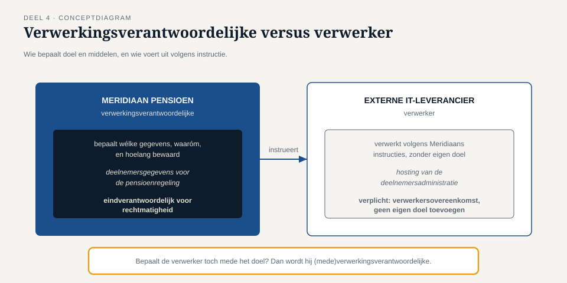
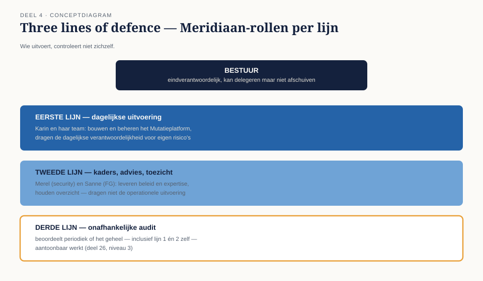

Deel 4 — Wie doet wat
Slidedeck · Ductus-cursus Informatiebeveiliging en privacy · niveau 1 · deel 4 van 10 · 23 slides
Slide 1 — Titel
Informatiebeveiliging en Privacy
Deel 4 · Niveau 1 · Fundament
Wie doet wat
Slide 2 — Terug naar deel 1
Sanne, dag één: "Ik moet onafhankelijk van jou kunnen blijven controleren."
Merel liet het drie weken liggen. Vandaag vraagt ze door.
Slide 3 — "Wij werken toch aan hetzelfde doel?"
Sanne: "Ja. Maar niet vanuit dezelfde rol."
Slide 4 — Twee AVG-rollen
Verwerkingsverantwoordelijke — bepaalt doel en middelen
Verwerker — verwerkt namens en in opdracht, zonder eigen doel

Slide 5 — Het grensgeval
Een verwerker die zelf doel toevoegt
→ wordt (mede)verwerkingsverantwoordelijke
→ met alle verplichtingen van dien
Slide 6 — Opdracht 4.1
Vier partijen bij Meridiaan. Verwerkingsverantwoordelijke, verwerker, of iets anders?
Slide 7 — De securityfunctie
Information security officer / CISO.
Beleid, risico's, incidenten, bewustwording, advies aan het bestuur.
Adviseert. Beslist meestal niet zelf.
Slide 8 — De functionaris gegevensbescherming
Wél een AVG-verplichte rol voor organisaties zoals Meridiaan
(grote schaal bijzondere persoonsgegevens).
Toezicht, advies, contactpunt naar AP en betrokkenen.
PAUZE
Slide 9 — Vier onafhankelijkheidseisen aan de FG

- Geen instructies over de uitvoering van haar taken
- Geen ontslag of straf voor haar oordelen
- Geen taken die tot belangenconflict leiden
- Rapportage aan het hoogste managementniveau
Slide 10 — Opdracht 4.2
Drie scenario's voor de FG-positionering.
Voldoet elk aan de onafhankelijkheidseisen?
Slide 11 — Waarom dit geen wantrouwen is
Het probleem zit niet in individuele integriteit.
Het zit in: zelf-controle kan geen controle zijn.
Slide 12 — Self-review bias
Mensen beoordelen hun eigen werk positiever
dan een buitenstaander zou doen.
Ook zonder kwade wil.
Slide 13 — Vier gevolgen als Merel en Sanne dezelfde persoon waren
- Blinde vlek i.p.v. controle
- Geen tegenwicht bij tijdsdruk
- Geen geloofwaardig contactpunt naar buiten
- Wettelijke overtreding
Slide 14 — Three lines of defence

Eerste lijn — Tweede lijn — Derde lijn
Slide 15 — De drie lijnen
Eerste — voert uit, draagt de dagelijkse risico's
Tweede — kaders, advies, toezicht (Merel + Sanne)
Derde — onafhankelijke audit, óók van de tweede lijn
Slide 16 — Wie zit waar bij Meridiaan?
Mutatieteam → eerste lijn
Merel, Sanne → tweede lijn
Interne audit → derde lijn (deel 26, niveau 3)
Slide 17 — Opdracht 4.3
Vier functies. Welke lijn, en waarom?
Slide 18 — Waarom Sanne niet aan Merel rapporteert
Beide tweede lijn.
Ze moeten elkaar juist kunnen tegenspreken —
niet elkaar aansturen.
Slide 19 — Opdracht 4.4
"Als iemand echt integer is, maakt het toch niet uit?"
Reageer.
Slide 20 — Boven de drie lijnen: het bestuur
Kan delegeren. Niet de eindverantwoordelijkheid.
(vooruitwijzing deel 24-25, niveau 3: DNB-toezicht)
Slide 21 — Terug naar het gesprek
Sanne: "We zijn allebei tweede lijn.
We hebben er allebei baat bij dat de ander onafhankelijk kan kijken.
Ook naar mij."
Slide 22 — Opdracht 4.5 — Reflectie
Hoe zit dit in jouw eigen organisatie?
Zit er iets in de verkeerde lijn?
Slide 23 — Vooruitblik
Deel 5: toegang en identiteit —
en eindelijk die verlopen accounts opruimen